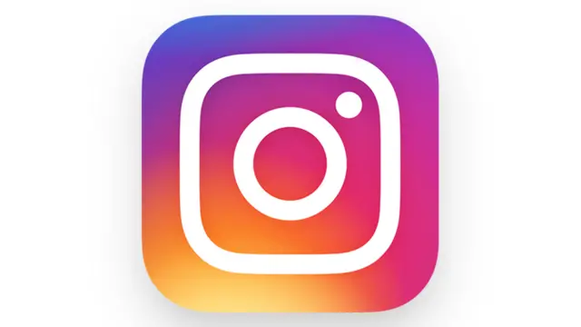
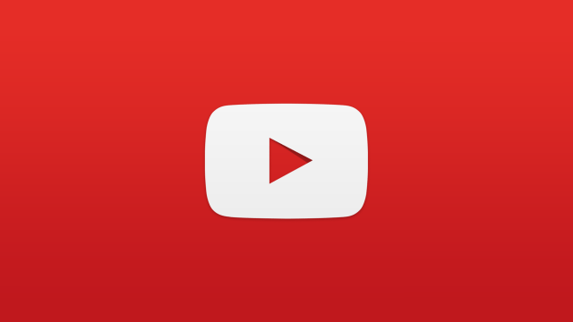
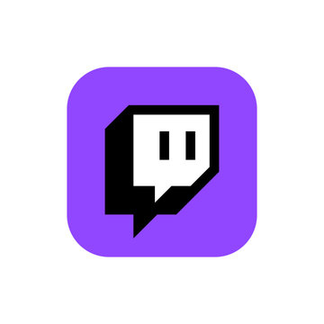

I know you already know what social media is but I want to give a thorough explanation on what it is. Social media is a variety of apps or websites that enable their users to share, create, and also interact with content. Content you may see like memes are a form of social media because there is somebody who made the meme and then shared it with other people on the internet. Social media can include apps such as Instagram, Youtube, Snapchat, Facebook, etc. I can bet that you use social media at least once in your life. Any app that allows you to post something like a picture of yourself or even a meme or something you made is considered a form of social media.
According to History.com, "Many people like to link the history of social media to the growth in communications technology that has been occurring since the end of the 19th century. A common starting point is Samuel Morse’s first telegraph, which he sent in 1844 between Washington, D.C. and Baltimore. However, going off our definition from before, this type of communication does not qualify as social media. First, it did not take place “online,” and second, telegrams do not contribute to any larger community or collective. Instead, they are used to send individual messages between two people. So, while it’s interesting to think of social media history as being part of a much larger continuum, the real history of social media starts in the 1970s with the emergence of the internet."
  | Different Types of Social Media Platforms | What they do |
|---|---|
| Instagram is an app that you can use on your cellular device or even on a laptop. Instagram allows you to make and post videos or pictures of yourself to share with anybody who follows you or stumbles across your account with many other unique features. | |
| Youtube | Youtube is a social media platform that allows you to only post videos. These videos can range from a number of things like tutorials, videogames, cooking, fishing, and even just random challenges. Youtube is known for its vast and wide variety of videos and content creators. Even you could become a content creator and make money off of youtube! |
| Twitch | Twitch is a social media platform that allows you or anybody to livestream to an audience and you could even get paid from it like youtube and instagram. A lot of teens and even adults use twitch to watch livestreams for live reactions to see how the creator actually feels. Twitch also allows the creator to livestream and record the entire livestream as a video so they can post it for people who missed out on their live. |
Most social media platforms have their own kind of unique gimmicks or feautres, but at the end of the day they retrieve the same result for their users. I assume whoever is reading this has used a form of social media and it is a good way to connect people, but sometimes even famous youtubers or twitch streamers need a break. Otherwise, social media is a fun and cool software that was built by many smart engineers. Most people take it for granted.
Sources I used: